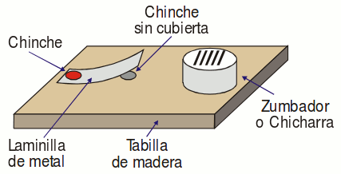

Cómo construir un aparato de transmisión en Morse
Como leíste anteriormente, Samuel Morse inventó el Telégrafo en el año de 1836.
Éste es un equipo que transmite señales eléctricas (emite y recibe), que se pueden convertir en sonidos y traducir mediante el código ya explicado.
2 Tablas finas de 10cm x 15cm
2 Pilas
2 Bandas de hule
4 Chiches
2 Laminillas de metal fino
Cable fino (Dependiendo de la distancia que quieras entre puntos a comunicar, recomendado 40 metros, para poder separar las estaciones por lo menos 10 metros)
Arma cada aparato según te mostramos a continuación.

Luego conéctalos según este esquema… de manera que uno de lo cables que activa la chicharra de un aparato, quede interrumpido por un pulsador hecho con la laminilla de metal en el otro aparato.
De esta forma al cerrar el circuito en el primer aparato la chicharra suena en el segundo y viceversa.
Hecho esto lo que resta es colocar las estaciones a la mayor distancia posible, preferiblemente ocultas detrás de un obstáculo de manera que no puedan verse directamente… y a divertirse por horas aprendiendo Morse, y transmitiendo mensajes con él.